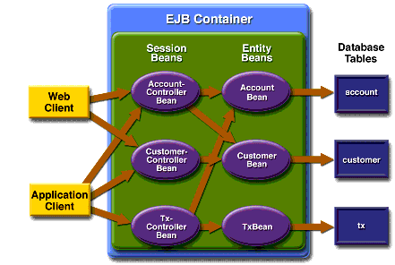

Enterprise Beans
Figure 36-2 takes a closer look at the access paths between the clients, enterprise beans, and database tables. As you can see, the end-user clients (web and application clients) access only the session beans. Within the enterprise bean tier, the session beans are clients of the entity beans. On the back end of the application, the entity beans access the database tables that store the entity states.
Note: The source code for these enterprise beans is in the
<INSTALL>/j2eetutorial14/examples/bank/src/com/sun/ebank/ejb/directory.

Session Beans
The Duke's Bank application has three session beans:
AccountControllerBean,CustomerControllerBean, andTxControllerBean. (Txstands for a business transaction, such as transferring funds.) These session beans provide a client's view of the application's business logic. Hidden from the clients are the server-side routines that implement the business logic, access databases, manage relationships, and perform error checking.AccountControllerBean
The business methods of the
AccountControllerBeansession bean perform tasks that fall into the following categories: creating and removing entity beans, managing the account-customer relationship, and getting the account information.The following methods create and remove entity beans:
These methods of the
AccountControllerBeansession bean call thecreateandremovemethods of theAccountBeanentity bean. ThecreateAccountandremoveAccountmethods throw application exceptions to indicate invalid method arguments. ThecreateAccountmethod throws anIllegalAccountTypeExceptionif thetypeargument is neitherChecking,Savings,Credit, norMoney Market. ThecreateAccountmethod also verifies that the specified customer exists by invoking thefindByPrimaryKeymethod of theCustomerBeanentity bean. If the result of this verification isfalse, thecreateAccountmethod throws aCustomerNotFoundException.The following methods manage the account-customer relationship:
The
AccountBeanandCustomerBeanentity beans have a many-to-many relationship. A bank account can be jointly held by more than one customer, and a customer can have multiple accounts. Because the entity beans use bean-managed persistence, there are several ways to manage this relationship. For more information, see Mapping Table Relationships for Bean-Managed Persistence.In the Duke's Bank application, the
addCustomerToAccountandremoveCustomerFromAccountmethods of theAccountControllerBeansession bean manage the account-customer relationship. TheaddCustomerToAccountmethod, for example, starts by verifying that the customer exists. To create the relationship, theaddCustomerToAccountmethod inserts a row into thecustomer_account_xrefdatabase table. In this cross-reference table, each row contains thecustomerIdandaccountIdof the related entities. To remove a relationship, theremoveCustomerFromAccountmethod deletes a row from thecustomer_account_xreftable. If a client calls theremoveAccountmethod, then all rows for the specifiedaccountIdare removed from thecustomer_account_xreftable.The following methods get the account information:
The
AccountControllerBeansession bean has twogetmethods. ThegetAccountsOfCustomermethod returns all of the accounts of a given customer by invoking thefindByCustomerIdmethod of theAccountBeanentity bean. Instead of implementing agetmethod for every instance variable, theAccountControllerBeanhas agetDetailsmethod that returns an object (AccountDetails) that encapsulates the entire state of anAccountBeanbean. Because it can invoke a single method to retrieve the entire state, the client avoids the overhead associated with multiple remote calls.CustomerControllerBean
Because it is the
AccountControllerBeanenterprise bean that manages the customer-account relationship,CustomerControllerBeanis the simpler of these two session beans. A client creates aCustomerBeanentity bean by invoking thecreateCustomermethod of theCustomerControllerBeansession bean. To remove a customer, the client calls theremoveCustomermethod, which not only invokes theremovemethod ofCustomerBeanbut also deletes from thecustomer_account_xreftable all rows that identify the customer.The
CustomerControllerBeansession bean has two methods that return multiple customers:getCustomersOfAccountandgetCustomersOfLastName. These methods call the corresponding finder methods--findbyAccountIdandfindByLastName--ofCustomerBean.TxControllerBean
The
TxControllerBeansession bean handles bank transactions. In addition to itsgetmethods,getTxsOfAccountandgetDetails, theTxControllerBeanbean has several methods that change the balances of the bank accounts:These methods access an
AccountBeanentity bean to verify the account type and to set the new balance. Thewithdrawanddepositmethods are for standard accounts, whereas themakeChargeandmakePaymentmethods are for accounts that include a line of credit. If thetypemethod argument does not match the account, these methods throw anIllegalAccountTypeException. If a withdrawal were to result in a negative balance, thewithdrawmethod throws anInsufficientFundsException. If a credit charge attempts to exceed the account's credit line, themakeChargemethod throws anInsufficientCreditException.The
transferFundsmethod also checks the account type and new balance; if necessary, it throws the same exceptions as thewithdrawandmakeChargemethods. ThetransferFundsmethod subtracts from the balance of oneAccountBeaninstance and adds the same amount to another instance. Because both of these steps must complete, thetransferFundsmethod has aRequiredtransaction attribute. If either step fails, the entire operation is rolled back and the balances remain unchanged.Entity Beans
For each business entity represented in our simple bank, the Duke's Bank application has a matching entity bean:
The purpose of these beans is to provide an object view of these database tables:
account,customer, andtx. For each column in a table, the corresponding entity bean has an instance variable. Because they use container-managed persistence, the entity beans contain no SQL statements that access the tables. The enterprise bean container manages all data in the underlying data source, including adding, updating, and deleting data from the database tables.In addition, a helper entity bean,
NextIdBean, is used to create account, customer, and transaction IDs.NextIdBeanis the object representation of thenext_idtable.AccountControllerBean,CustomerControllerBean, andTxControllerBeanuseNextIdBean'sgetNextIdmethod when creating new instances of the respective entity beans.Unlike the session beans, the entity beans do not validate method parameters (except for the primary key parameter of
ejbCreate). During the design phase, we decided that the session beans would check the parameters and throw the application exceptions, such asCustomerNotInAccountExceptionandIllegalAccountTypeException. Consequently, if some other application were to include these entity beans, its session beans would also have to validate the method parameters.Because the entity beans always run in the same Java VM as their clients the session beans, for improved performance the entity beans are coded with local interfaces.
Helper Classes
The EJB JAR files include several helper classes that are used by the enterprise beans. The source code for these classes is in the
<INSTALL>/j2eetutorial14/examples/bank/src/com/sun/ebank/util/directory. Table 36-1 briefly describes the helper classes.
Database Tables
A database table of the Duke's Bank application can be categorized by its purpose: representing business entities and holding the next primary key.
Tables Representing Business Entities
Figure 36-3 shows the relationships between the database tables. The
customerandaccounttables have a many-to-many relationship: A customer can have several bank accounts, and each account can be owned by more than one customer. This many-to-many relationship is implemented by the cross-reference table namedcustomer_account_xref. Theaccountandtxtables have a one-to-many relationship: A bank account can have many transactions, but each transaction refers to a single account.

Figure 36-3 uses several abbreviations. PK stands for primary key, the value that uniquely identifies a row in a table. FK is an abbreviation for foreign key, which is the primary key of the related table. Tx is short for transaction, such as a deposit or withdrawal.
Table That Holds the Next Primary Key
The next_id table has a column,
bean_type, that stores the type of ID, and a column namedid. The value ofidis the next primary key that is passed to thecreatemethod of an entity bean. For example, before it creates a newAccountBeanentity bean, theAccountControllerBeansession bean must obtain a unique key by invoking thegetNextIdmethod ofNextIdBean. ThegetNextIdmethod reads theidfrom thenext_idtable, increments theidvalue in the table, and then returns theid.Protecting the Enterprise Beans
In the J2EE platform, you protect an enterprise bean by specifying the security roles that can access its methods. In the Duke's Bank application, you define two roles--
bankCustomerandbankAdmin--because two categories of operations are defined by the enterprise beans.A user in the
bankAdminrole will be allowed to perform administrative functions: creating or removing an account, adding a customer to or removing a customer from an account, setting a credit line, and setting an initial balance. A user in thebankCustomerrole will be allowed to deposit, withdraw, and transfer funds, make charges and payments, and list the account's transactions. Notice that there is no overlap in functions that users in either role can perform.The system restricts access to these functions to the appropriate role by setting method permissions on selected methods of the
CustomerControllerBean,AccountControllerBean, andTxControllerBeanenterprise beans. For example, by allowing only users in thebankAdminrole to access thecreateAccountmethod in theAccountControllerBeanenterprise bean, you deny users in thebankCustomerrole (or any other role) permission to create bank accounts.
All of the material in The J2EE(TM) 1.4 Tutorial is copyright-protected and may not be published in other works without express written permission from Sun Microsystems.